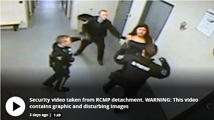
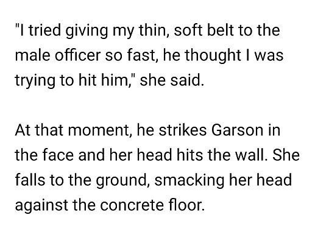

The Belt that Throws Itself
November 11th, 2020
CBC:
Well goys, CBC is at it again with the anti-white propaganda, this time with fakery so obvious I'm unsure who the intended audience is.
TDC_ARTICLE_START
A First Nations woman was knocked unconscious at an RCMP detachment in Thompson, Man., and despite the act being caught on video, no formal investigation was launched and the woman says she was bullied into withdrawing her complaint against the officers involved.
The video, which CBC News obtained through a court application, has one former police watchdog calling for a full probe, and has prompted a lawsuit alleging she was discriminated against because she is Indigenous. Garson is a member of Tataskweyak Cree Nation.
Genesta Garson was 19 years old when she was picked up by two community safety officers on Jan. 6, 2018 outside of the Northern Inn in Thompson, a city of about 13,000 in northern Manitoba, on the suspicion of being drunk.
She was supposed to spend the night sleeping it off on a cold cement bed in a holding cell.
Instead, she left in an ambulance after a safety officer punched her in the chin, knocking her unconscious.
TDC_ARTICLE_STOP
They then proceed to have the video stopped on the frame just before the White Cop hits the abo girl.

TDC_ARTICLE_START
The video shows Garson about to take off her belt and then hesitating. When one of the safety officers moves toward her, she moves away.
"I felt very uncomfortable when they asked me to take off my bra," Garson said.
She takes off her belt and throws it toward him and the female RCMP officer.
"I tried giving my thin, soft belt to the male officer so fast, he thought I was trying to hit him," she said.
TDC_ARTICLE_STOP
Okay, now watch the video.
No really, you need to watch that, you’ll get a great chuckle.
What we can see with our lying goy-peasant eyes is her clearly move the belt back out of the White Man on her rights hand, wind up, bring the belt all the way over her head, before doing an uncoordinated but clearly malicious attack on the White Man on her left. This is assault. You do not get to violently attack White Men with a belt, not matter how much privilege you feel you deserve.
Fact Check: False
TDC_ARTICLE_START
"I don't feel safe around the RCMP officers anymore. Not since this happened," Garson told CBC News.
"I was knocked out. They dragged me into the cells. My body was shaken up from being hit hard in the head."
TDC_ARTICLE_STOP
Do we see this propaganda goyim? “I don’t feel safe.” The purpose of that statement is a victimhood inversion trick. The CBC propagandist, Kristin Annable, wants to pretend that the subjective feelings of brown people somehow make them oppressed.
You can also see her being dragged into the cells on that video, which is them doing their job. Once again, the propagandist says something without outright condemning it, to allow the NPC reading the propaganda to imagine standard operating procedure, which any White Person would be subjected to, is somehow being unfairly applied to the brown person.
TDC_ARTICLE_START
Garson admits to having had a few beers that night, but says she was detained after slipping on the ice.
TDC_ARTICLE_STOP
Again, total non-sequitur. This is another way the propagandist can attempt to influence the Non-Player-Character without outright lying. The goal is to get the NPC to think “oh she just slipped, she wasn’t drunk,” which is hilarious.
Of course, you know that’s not true, because of what is said, and what is not said. What is talked about, and what is not talked about. If Garson wasn’t drunk, they would have just come out and said “she wasn’t drunk.” Because they didn’t, you know she was.
TDC_ARTICLE_START
As Garson lay on the ground, not moving, the female RCMP officer quickly removed a layer of pants.
The two male officers then take her by the hands and drag Garson on her back and into a jail cell.
She is left on her back in the cell — and is seen writhing in pain — for about 15 minutes, when paramedics arrive and take her away on a stretcher to hospital
"I am lost for words on this case. I really am, I'm lost for words," said her lawyer, Rohit Gupta, as he watched the video.
"That is a person that's clearly in pain, who came into this detachment standing on their own two feet and left in a stretcher."
Hospital records from that night say she "struck officer with her belt, so got punched in the face."
TDC_ARTICLE_STOP
Records say that, because that’s clearly what happened, and we have the video evidence to see that.
But moving on to Rohit Gupta, he does that typical low testosterone thing of saying they have no words, then breaking out the prepared 10 page essay.
Alright he’s not that bad, but once again we see the “wow, just wow,” tactics of the privileged. Notice how he just describes what happened? If you don’t understand this tactic, let me show you a fake example.
A man walks into a bar, starts a fight with two random people, gets the shit kicked out of him. Leaves on stretches.
Lawyer suing the owner of the bar: “I have no words, this is a human being who went in on two legs and got taken out on a stretcher. Wow, just wow.”
TDC_ARTICLE_START
Garson's case is just one stemming from the over 27,000 times a person has been detained under the province's Intoxicated Persons Detention Act (IPDA) by the RCMP in northern Manitoba in the last five years.
Though the region has a fraction of Winnipeg's population of 700,000, figures provided by the RCMP show that people in the North are detained under IPDA at a rate six times greater than those in the capital.
The law allows the detention of anyone believed to be intoxicated in a public place.
They are not formally arrested and no record is created that is accessible through open court proceedings.
The law is meant to help protect an intoxicated person from being a danger to themselves or others.
But it is used disproportionately against Indigenous people, said Gupta.
He has spent the years as a criminal defence attorney in the North and says he frequently sees intoxicated Indigenous people wind up in jail, while anyone else gets a ride home or a warning from cops.
"The law is applied differently," he said. "There's a stark difference in the way that individuals are treated."
TDC_ARTICLE_STOP
Lawyer Rohit Gupta
Oh man, I really could just go line by line with Kristin Annable’s article, it’s just that bad. And when I say bad, I mean deceitful, not poorly written. Again we see the confusing quantification of arrest rates. Is she talking per capita, because if so the total population of the region is utterly irrelevant.
TDC_ARTICLE_START
After leaving hospital, Garson was charged with assaulting an officer. Gupta took her case pro bono and the charge was later stayed.
Gupta then helped her file a formal complaint against the RCMP with the Civilian Review and Complaints Commission in November 2018.
The complaint, which was obtained by CBC, says Gupta was to be the RCMP's formal contact throughout the process.
However, that didn't happen.
Instead, Garson and Gupta say several different RCMP officers came to Garson's home in Split Lake, 140 kilometres north of Thompson, asking her to sign a form withdrawing the complaint.
TDC_ARTICLE_STOP
This is actually completely normal. Again the propagandist attempts to pretend this is unusual. It’s not.
TDC_ARTICLE_START
He said he didn't know enough about the "ins and outs" of the process to answer why they didn't go through her lawyer.
As for the high numbers of people arrested for being intoxicated in the North, he chalked that up to police being tapped to handle the social issues that plague these communities.
"At the end of the day, the RCMP and policing is not the right tool for dealing with the social issues. We're just dealing with the causes. We're just dealing with the result of the social issues."
TDC_ARTICLE_STOP
And we see here at the end the limits of Conservatism, eg. Donor-Rightism. We saw this earlier with the unchallenged part about The Aboriginals being detained for public intoxication more. That’s because they’re alcoholics.
And everybody knows this. But the Cuckservative will try to be polite and dance around the issue and say things like “we’re just dealing with the result of the social issues.”
When what they should be saying is “I know you know that Abos are alcoholics. I know this is a racial attack on white people, that has nothing to do with police.”
Again, Conservatism exists because Billionaires fund it. Billionaires fund it because it is designed to go nowhere.